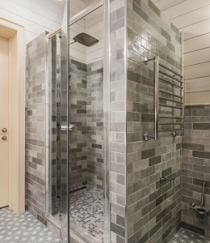
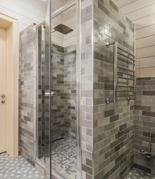

Проект гостевого загородного дома в стиле Тюдор, МО, 2019г.
-
обратился заказчик с просьбой спроектировать гостевой загородный дом
-
на площадку вышла первая строительная бригада, которая сделала фундамент УШП
-
вышла компания, которая возвела каркас дома
-
на площадку вышла первая строительная бригада, которая сделала фундамент УШП
-
вышла компания, которая возвела каркас дома
-
Дом создан в рекордно короткие сроки
-
Общая площадь дома 385 м²
-
Проект опубликован в журнале SALON Классика DeLux №3.2020
-
Акцент делался на том, что должен быть большой гараж 100 м², отдельные помещения для обслуживающего персонала на первом этаже, а гостевые спальни и гостиная с кухней на мансарде
-
Дом предполагалось строить на месте маленького дома, в котором проживал работник заказчика. Он так давно уже помогает на участке, что стал практически членом семьи
-
Поэтому в самом начале стройки мои заказчики все время говорили, что строят дом для него. Однако это продолжалось не долго. Ровно до того момента, когда они поняли, что у нас стало получаться
-
Место стройки – это старый дачный подмосковный поселок с историей
Холл
Дом условно разделен на две части - общую и гостевую этажами. Так на мансарде располагаются спальни, гостиная, кухня, столовая, ванные комнаты, гардеробные. На первом этаже гостевой санузел, прихожая, гараж, техпомещения и помещения персонала. Прямо из прихожей первого этажа по лестнице можно попасть в холл мансарды из которого можно пройти в жилые комнаты

Для консультации мы приглашали арбориста, чтобы четко очертить границы стройки. Отсюда и г-образная конфигурация дома. Дуб оказался во внутреннем дворе, напротив центрального входа в дом
Наличие дуба на участке так же повлияло и на стилистику дома. Я бы назвала его подмосковный Тюдор. Дома в таком стиле еще не распространены в нашем регионе. Хотя в этом историчесом стиле много строили и строят в Северной Америке, тилизуя постройки под дома старой Англии. Рядом с будущим домом растёт двухсотлетний дуб, который нужно было сохранить
Гостиная

-
Общая площадь гостиной 62 м². Это открытое пространство объединенное с кухней и зоной столовой. Высота сложных потолков гостиной 3,5 м
-
Всё помещение отделано вагонкой Штиль, покрашенной в заводских условиях
-
на площадку вышла первая строительная бригада, которая сделала фундамент УШП
-
зашла организация, которая выставила силовой каркас из LVL балок и сделали сложную стропильную систему крыши
-
передали дом другой строительной организации, которая сделала отделку фасадов и внутреннюю отделку
Передо мной стояли задачи построить дом быстро, поэтому я применяла технологии, которые позволили построить дом и сделать отделку за один сезон


-
Из-за того, что основные окна в доме выходят на север, мы выбрали светлые тона. При этом старались, чтобы этот цвет стен сочетался со своей мебелью в доме
-
У нас довольно таки сложные стены и потолок. Все жилые комнаты находятся на мансардном этаже. Получились сложные и в то же время интересные помещения
-
В основном в этом доме использовалась мебель из запасов заказчика. Кухня, гардеробная и встроенная в ниши мебель делалась на заказ. Встроенная мебель в нишах по моим эскизам и рассчитывалась с учетом сложной ломанной крыши
-
Наверное, благодаря тому, что многие предметы интерьера уже прожили какую-то часть жизни со своими хозяевами, интерьер дома не смотрится как новодел
Кухня
-
Кухня является частью гостиной. Однако, чтобы не перегружать помещение, кухонная мебель не высокая. Общая высота 1400 мм. Поскольку назначение дома как гостевой, то данной мебели вполне достаточно
-
Выбор цвета кухни был обусловлен тем, что часть предметов интерьера уже была у заказчика. И чтобы связать их воедино, был выбран цвет вишни для фасадов
-
Нужно было разместить 4 спальни. Кухня должна была быть небольшой с минимальным набором техники, поскольку дом гостевой
В процессе стройки нам пришлось вносить изменения и не простые. Заказчик начал понимать, что у него получается красивый дом, то он лучше его основного. У него стали появляться мысли, что основной дом нужно перестроить. Поэтому мы срочно делали перепланировку – объединили две спальни в одну, сделали при ней гардеробную и ванную комнату. Определили её как хозяйскую
Как я написала ранее – первоначальная задача была построить дом с гаражом и помещениями для обслуживающего персонала. Предполагалось, что мы закончим строительство дома с наружной отделкой в строительный сезон и отделаем помещения для персонала. Благодаря фундаменту УШП (утепленная шведская плита) основные коммуникации были разведены в самом начале строительства.
Столовая
Столовая так же является частью гостиной. Как уже отмечалось ранее, в дом переехали предметы мебели из старого дома заказчика. Так около обеденного стола стоит старинная лавочка, бережно отреставрированная


Холл
-
Мансардный этаж разделен на две части - общественную и условно приватную
-
Поднимаясь по лестнице на мансардный этаж из холла можно попасть в гостиную или по коридору пройти в спальни

Мастер спальня
На мансарде располагаются 3 спальни. Одна из спален 30 м², соединена с гардеробной и собственной ванной. В этой спальни есть мягкий комфортный диван и бюро, выполняющее роль рабочего стола


Ванная комната
Ванная комната 8,5 м² рядом с мастер-спальней оснащена душевой кабиной, унитазом с гигиеническим душем и раковиной. Из окна ванной открывается вид на двухсотлетний дуб


Гостевые спальни
В этом доме еще две спальни. Одна спальня 25 м², другая небольшая 12 м²


Санузлы
-
Гостевой санузел первого этажа несет на себе дополнительную функцию постирочной. Стиральная машина спрятана под столешницей рядом с раковиной
-
Всё помещение отделано вагонкой Штиль, покрашенной в заводских условиях
 

Чем ближе приближался конец строительных работ, тем больше у нашего заказчика возникало желание переехать в этот дом самому. И не просто переехать, а отметить новый 2020 год в этом новом доме
-
Это во многом повлияло на выбор отделочных материалов. В основном я искала всё, что можно было приобрести по факту. У нашего заказчика есть собаки и он просил подобрать для отделки керамогранит во все помещения. Самый большой выбор складской программ у АрдоСтудио и я естественно обратилась к ним за помощью
-
Поскольку у нас большая открытая гостиная, совмещенная с кухней-столовой соединена с холлом и коридором мансарды, из которого ведут двери в спальни, двери которых обычно открыты, на все эти помещения был выбран керамогранит под дерево
-
Только ступени на лестницу были выполнены на заказ. Однако, поскольку фабрика Italonотечественная, то сроки были минимальные. В 3-х санузлах на стенах и полу была использована плитка так же из складской программы Ардо Студио Equipe
-
В целях экономии времени на отделку на всех стенах и потолке была использована вагонка шитль от ТомСойер. Ее привозили на объект уже крашенную по нашему требованию в нужный цвет в заводских условиях


Перечень услуг
-
.01
Адаптация проекта на конкретной местности
-
.02
Подготовка условий для строительства
-
.03
Проведение геодезических и разбивочных работ
-
.04
Закупка строительных материалов со скидками
-
.05
Предоставляем комплекс услуг дизайнеров, архитекторов, инженеров, проектировщиков
-
.06
Установка временных заграждений, подвод воды и электричества, обустройство бытовок
-
.07
Составление и согласование с гос. органами техническую и проектную документацию
-
.08
Составление и согласование с гос. органами техническую и проектную документацию